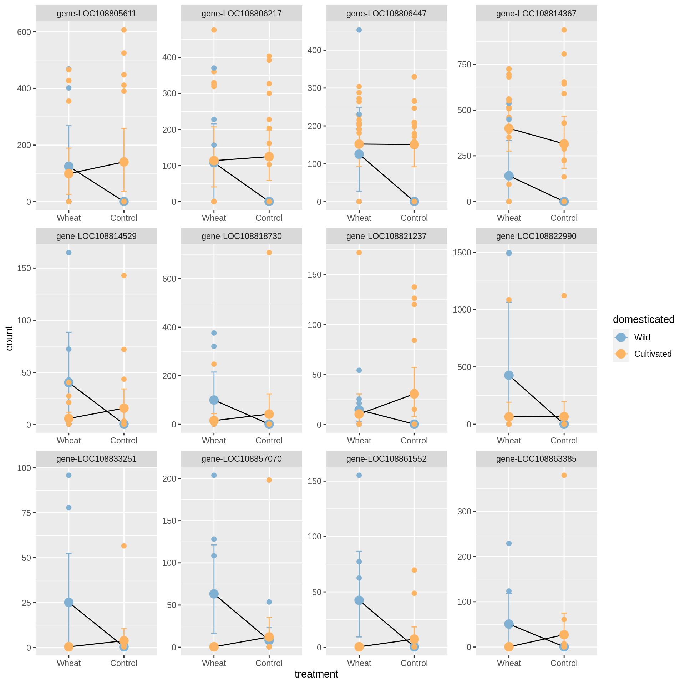

Brassicas_2021_RNAseq
Benjamin A Taylor
15/09/2021
Data import, pre-filtering and QC
We begin by performing QC on the RNAseq data, removing genes with low expression and samples that have evidence of being mislabeled. First for Brassica:
## [1] "13595/48645 Brassica genes filtered due to very low expression."## [1] "Removing an additional 104 Brassica genes with many low counts."Looking at the PCA, we can see a strange cluster of outlying Brassicas. These are all B. rapa tricoloris; we won’t exclude them, but we’ll take a note of their labels in case we want to try re-running analyses without them later. 
Now repeat QC and pre-filtering for Raphanus samples:
## [1] "14461/53691 Raphanus genes filtered due to very low expression."## [1] "Removing an additional 605 genes with many low counts."We see unusual clustering in the PCA for Raphanus, as with Brassica. The ‘outlying’ samples on PC2 are represent all Asian sativus var. caudatus, while the U.S. caudatus samples cluster with the other wilds. As with the unusual B. tricoloris samples, we’ll retain these for now but make a note in case we wish to exclude them at a later time. 
Parental effect handling
Before we proceed with the analysis, we need to decide how to handle the fact that a subset of samples have been standardised for parental effects, while the remaining samples have not received such a standardisation. Checking how many genes exhibit a difference between standardised and un-standardised conditions under liberal conditions (p<0.1, lfc threshold=0) will give us some indication of how important this standardisation is.
Note that for Raphanus, all species/subspecies have both standardised and unstandardised samples, so we can just compare all against all, whereas for Brassica standardisation is present only for some B rapa (both wild and domesticated) so we need to subset before running the DESeq2 comparison.
## [1] "Number of Brassica rapa genes with parental effects at p<0.1: 173/34946"## [1] "Number of GO terms enriched among Brassica rapa parental DEGs: 26"## [1] "Number of Raphanus genes with parental effects at p<0.1: 85/38625"## [1] "Number of GO terms enriched among Raphanus parental DEGs: 26"Just out of interest, we’d also like to know whether the fucntions associated with parental effects in each case are the same- in fact, there’s no overlap:
## [1] "Number of shared GO terms enriched among parental effect DEGs in Brassica and Raphanus: 0 (hypergeometric p=1)."The number of genes that display parental effeects in each case is quite small. At this stage we could choose to exclude these genes entirely, or we could retain them but keep tabs as we go along to see if these genes overlap strongly with other sets of genes that we pull out as interesting. For now we’ll go with the latter option.
Work package 1: Comparing domesticates to their wild progenitors
For this work package, we wish to compare wild progenitor species to modern domesticates. For Brassica, the comparison is between domesticated B rapa with wild B rapa, while for Raphanus the comparison is between R raphanistrum (wild) and all other Raphanus samples, all of which appear to be domesticated. Our analytic design for DESeq2 is expression ~ domestication + treatment + domestication*treatment.
First, let’s run the model for Brassica and check that the fit looks good:
## [1] "Check for gene expression outliers"## [1] "Local fit:"## [1] "Parametric fit"There are no apparent gene expression outliers. The parametric model is smoother and levels off more soundly to the right of the x axis, so we’ll move forward using this model for the results (remember, in general it’s better to overestimate than underestimate the dispersion parameter for genes with low expression).
Now the results for Brassica:
## [1] "Genes DE with treatment in Brassica rapa: 9 upregulated in no-competition treatment; 16 upregulated in competition treatment."## [1] "Genes DE with domestication status in Brassica rapa: 2073 upregulated in domesticated samples; 1818 upregulated in wild samples."## [1] "Genes DE with interaction between treatment and domestication in Brassica rapa: 41."## DEGs GO_terms
## Domesticated_bias 2073 55
## Wild_bias 1818 85
## Unstressed_bias 9 15
## Stressed_bias 16 13
## Interaction 41 25We’re particularly interested in the interaction DEGs, since these are genes that, under domestication, have expressed a change in the plasticity of their responses to a cultivated (i.e. no-competition) environment. Interaction terms are hard to interpret, but plotting helps. Here’s the 12 most significant interaction terms:
There doesn’t appear to be an overall trend in terms of gains or losses of plasticity, but we can check this by asking whether the fold changes on average are higher or lower for wild or domesticated samples:
We must therefore conclude that Brassica interaction genes do not exhibit a consistent overall change in plasticity between wild and domesticated accessions.
Now, let’s repeat the above analyses using Raphanus. First check that the fit looks good:
## [1] "Check for gene expression outliers"## [1] "Local fit:"## [1] "Parametric fit"There are no apparent gene expression outliers. The parametric model is smoother and levels off more soundly to the right of the x axis, so we’ll move forward using this model for the results (remember, in general it’s better to overestimate than underestimate the dispersion parameter for genes with low expression).
## [1] "Genes DE with treatment in Raphanus: 76 upregulated in no-competition treatment; 53 upregulated in competition treatment."## [1] "Genes DE with domestication status in Raphanus: 533 upregulated in domesticated samples; 179 upregulated in wild samples."## [1] "Genes DE with interaction between treatment and domestication in Raphanus: 98."## DEGs GO_terms
## Domesticated_bias 533 48
## Wild_bias 179 64
## Unstressed_bias 76 34
## Stressed_bias 53 27
## Interaction 98 49Plotting the 12 most significant interaction terms for Raphanus:

Are Raphanus interaction genes statistically of greater plasticity in wild or domesticated samples?
##
## FALSE TRUE
## 29 69## [1] "Probability that changes in plasticity of Raphanus genes during domestication are non-random in their directionality:"## [1] "chi-squared p=5.33e-05; paired t-test p=0.15"At least based on the chi-squared output, it appears that Raphanus genes on average have increased in plasticity during domestication. However, this result might be misleading, because the values for the Raphanus domesticates combine multiple different species, which may have resulted in depressed estimates of gene expression plasticity. For a more robust analysis, we should re-run the above for each Raphanus domesticate individually:
## species up_wild up_dom chisq t wilcox
## 1 Raphanus raphanistrum munra 39 59 0.043400 0.0484 0.0008654630
## 2 Raphanus sativus 31 67 0.000276 0.0928 0.0005876102
## 3 Raphanus sativus var. caudatus 32 66 0.000594 0.7170 0.0002252579When subsetting by species, the results are more interesting: per a chi-squared test, interaction genes are significantly more likely to be up-regulated than down-regulated. Paired t-tests gives less consistent results, but paired Wilcoxon tests concur with the chi-squared results. We can therefore tentatively conclude that in Raphanus, genes with significant interactions between domestication and treatment are significantly more like than chance to have increased in their gene expression plasticity in the course of domestication: in other words, humans appear to have selected for increased gene expression plasticity in radishes.
Work package 2: Comparing wild progenitors to never-domesticated wild species
We now wish to ask a different question: do ‘progenitor species’ (i.e. those that were the original targets of human selection) differ systematically in their patterns of gene expression from wild species that were never domesticated? We are particularly interested in knowing whether progenitor species express greater gene expression plasticity than their never-domesticated relatives, since this could suggest that earty human farmers either intentionally or inadvertently targeted species that were particularly receptive to the benefits of cultivation.
Unfortunately, for Raphanus we have no data for non-domesticated wild species, so this analysis will be restricted to Brassica, comparing wild Brassica rapa to a number of never-domesticated Brassicas. We’ll begin by fitting a DESeq2 model as before, except that instead of comparing wild to domesticated, we’ll compare progenitors to non-progenitors.
## [1] "Check for gene expression outliers"## [1] "Local fit:"## [1] "Local fit:"Results summary:
## DEGs GO_terms
## Domesticated_bias 8710 53
## Wild_bias 9520 75
## Unstressed_bias 9 40
## Stressed_bias 11 10
## Interaction 63 30Plot top 12 interaction terms: